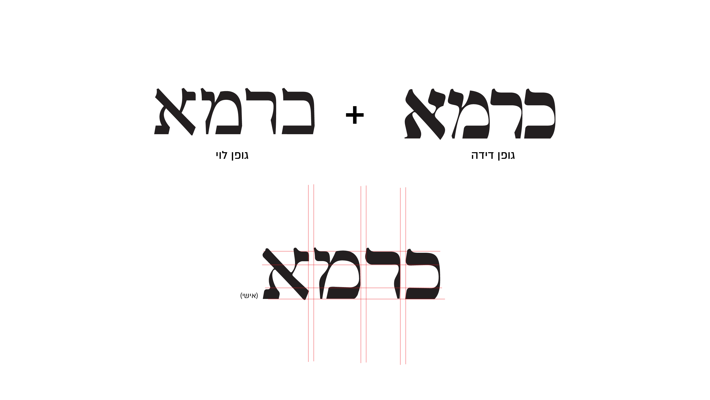
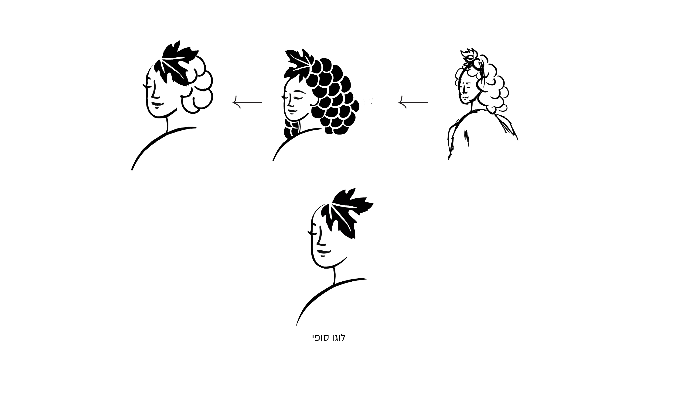
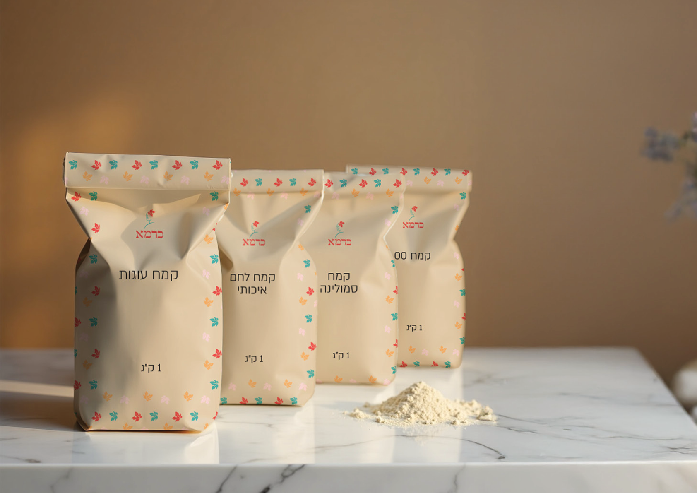
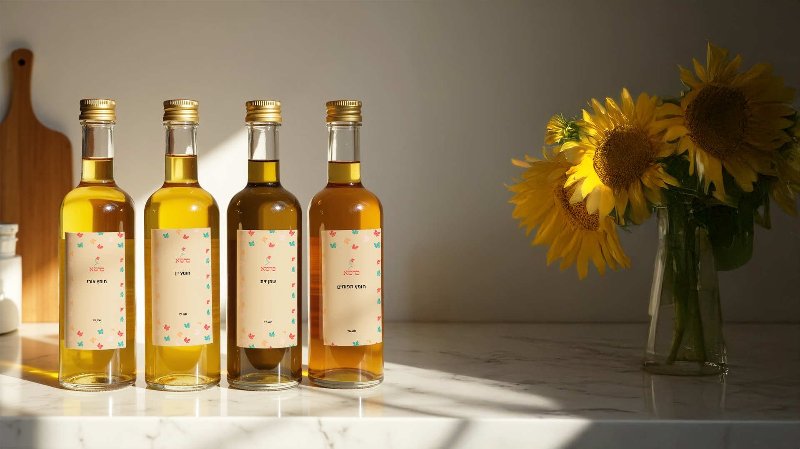
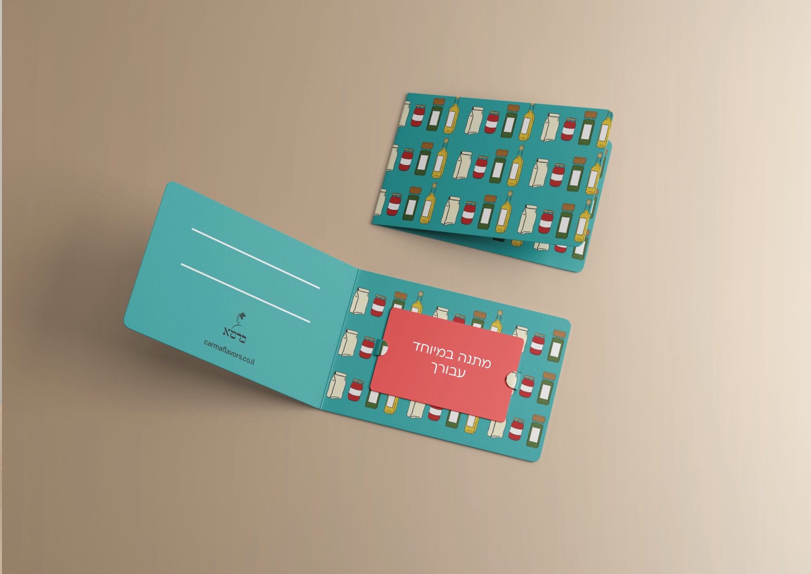
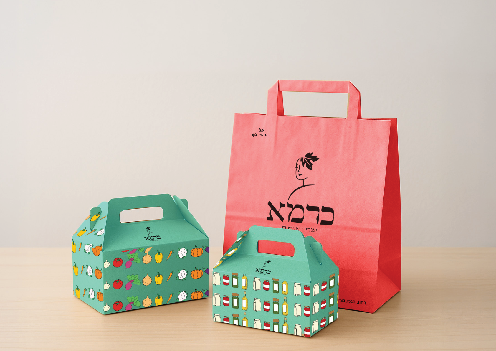

Creating Flavors — a home-style food brand built on tradition and warmth.
An experiential space where groups can rent a private kitchen for shared cooking — in a light, free-spirited, and connecting atmosphere. The space also hosts a variety of cooking workshops, spanning both global cuisines and rooted, traditional recipes.
Creating a new food brand that conveys a precise blend of tradition, home-style comfort, and premium quality. The task was to develop a brand language that feels authentic, warm, and inviting, while creating differentiation in a competitive market.
A visual language inspired by the worlds of home and food. The logo was designed by modifying and combining classic fonts (Dida and Levi) to create a unique, bold typography. The branding incorporates warm lifestyle photography and a clean style, emphasizing the brand's core values: creating together, high-quality raw materials, and a communal culinary experience.
The logo evolved from a hand-sketched grape-goddess motif into a refined, minimal mark, with typography built by combining and modifying the Dida and Levi typefaces.





